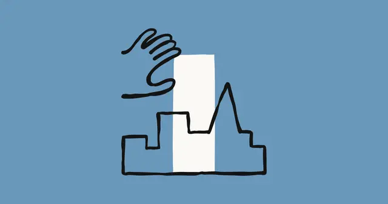

Anthropic / 仕事での活用
Anthropic、企業向け「Enterprise Frontier Safeguards」発表 データ保持とAI監視を分離

Anthropicは2026年9月1日、企業向けの新たな安全機構「Enterprise Frontier Safeguards（EFS）」を発表しました。顧客データをAnthropic側に保持せず、企業自身のクラウド環境に保存しながら、複数セッションにまたがる不正利用を自動検知できる仕組みです。金融、医療、公共部門など厳格なデータ管理を求める組織で、最先端AI導入の障壁を下げる狙いがあります。
QUICK READ
この記事の要点
Anthropicは2026年9月1日、企業向けの新たな安全機構「Enterprise Frontier Safeguards（EFS）」を発表しました。顧客データをAnthropic側に保持せず、企業自身のクラウド環境に保存しながら、複数セッションにまたが…
記事で取り上げている点
- 「ゼロデータ保持」と継続監視を両立
- Anthropicの人間によるレビューを不要に
- 100社超と共同設計、主要クラウドにも対応
- 今後の展望
Discord掲載記事からの抜粋です。詳細・文脈は全文と出典をご確認ください。
出典・参考リンク
日付はAFNJPへの掲載日です。発表元の公開日とは異なる場合があります。